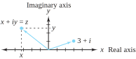
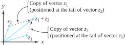
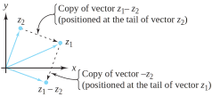
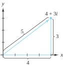
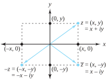
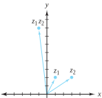

Complex numbers are ordered pairs of real numbers, so they can be represented by points in the plane. In this section we show the effect that algebraic operations on complex numbers have on their geometric representations.
We can represent the number \(z=x+iy=(x, y)\) by a position vector in the \(xy\) plane whose tail is at the origin and whose head is at the point \((x, y)\text{.}\) When the \(xy\) plane is used for displaying complex numbers, it is called the complex plane, or more simply, the z plane. Recall that \(\mathrm{Re}(z)=x\) and \(\mathrm{Im}(z)=y\text{.}\) Geometrically, \(\mathrm{Re}(z)\) is the projection of \(z=(x, y)\) onto the \(x\) axis, and \(\mathrm{Im}(z)\) is the projection of \(z\) onto the \(y\) axis. It makes sense, then, to call the \(x\) axis the real axis and the \(y\) axis the imaginary axis, as Figure 1.3.1 illustrates.

Figure1.3.1.The complex plane
Addition of complex numbers is analogous to addition of vectors in the plane. As we saw in Section 1.2, the sum of \(z_1=x_1+iy_1=(x_1, y_1)\) and \(z_2=x_2+iy_2=(x_2, y_2)\) is \((x_1+x_2, y_1+y_2)\text{.}\) Hence \(z_1+z_2\) can be obtained using the “parallelogram law” for vectors, where the vector sum is represented by the diagonal of the parallelogram formed by the two original vectors, as illustrated by Figure 1.3.2. The difference \(z_1-z_2\) can be represented by the displacement vector from the point \(z_2=(x_2, y_2)\) to the point \(z_1=(x_1, y_1)\text{,}\) as Figure 1.3.3 depicts.

Figure1.3.2.The sum \(z_1+z_2\)

Figure1.3.3.The difference \(z_1-z_2\)
Definition1.3.4.Modulus.
The modulus, or absolute value ,of the complex number \(z=x+iy\) is a nonnegative real number denoted by \(|z|\) and defined by the relation
The number \(|z|\) is the distance between the origin and the point \(z=(x, y)\text{.}\) The only complex number with modulus zero is the number 0. The number \(z=4+3i\) has modulus \(|4+3i| = \sqrt{4^2+3^2}=\sqrt{25}=5\text{,}\) and is depicted in Figure 1.3.5.

Figure1.3.5.The real and imaginary parts of a complex number
The numbers \(|\mathrm{Re}(z)|, \, |\mathrm{Im}(z)|\text{,}\) and \(|z|\) are the lengths of the sides of the right triangle \(OPQ\) shown in Figure 1.3.6. The inequality \(|z_1| \lt |z_2|\) means that the point \(z_1\) is closer to the origin than the point \(z_2\text{.}\) Although obvious from Figure 1.3.6, it is still profitable to work out algebraically (which we ask you to do in the exercises) that
Figure1.3.6.The modulus of \(z\) and its components
The difference \(z_1-z_2\) represents the displacement vector from \(z_2\) to \(z_1\text{,}\) so the distance between \(z_1\) and \(z_2\) is given by \(|z_1-z_2|\text{.}\) We can obtain this distance by using Definitions 1.2.2 and Definition 1.3.4 to obtain the familiar formula
If \(z=(x, y)=x+iy\text{,}\) then \(-z=(-x, -y) = -x-iy\) is the reflection of \(z\) through the origin, and \(\overline{z}=(x, -y) = x-iy\) is the reflection of \(z\) through the \(x\) axis, as illustrated in Figure 1.3.7

Figure1.3.7.The geometry of negation and conjugation
We can use an important algebraic relationship to establish properties of the absolute value that have geometric applications. Its proof is rather straightforward, and we ask you to give it in the exercises for this section.
An important application of Identity (1.3.3) is its use in establishing the triangle inequality, which states that the sum of the lengths of two sides of a triangle is greater than or equal to the length of the third side. Figure 1.3.9 illustrates this inequality.
Theorem1.3.8.The triangle inequality.
If \(z_1\) and \(z_2\) are arbitrary complex numbers, then
Taking square roots yields the desired inequality.
Example1.3.10.
To produce an example of which Figure 1.3.9 is a reasonable illustration, let \(z_1=7+i\) and \(z_2=3+5i\text{.}\) Then \(|z_1| =\sqrt{49+1}=\sqrt{50}\) and \(|z_2|=\sqrt{9+25}=\sqrt{34}\text{.}\) Clearly, \(z_1+z_2=10+6i\text{;}\) hence \(|z_1+z_2| =\sqrt{100+36}=\sqrt{136}\text{.}\) In this case, we can verify the triangle inequality without appealing to calculator approximations because
Subtracting \(|z_2|\) from the left and right sides of this string of inequalities gives an important relationship that is used in determining lower bounds of sums of complex numbers:
If \(z_1=1+2i\) and \(z_2=3+2i\text{,}\) then \(|z_1| = \sqrt{1+4} = \sqrt{5}\) and \(|z_2| = \sqrt{9+4} = \sqrt{13}\text{.}\) Also \(z_1z_2=-1+8i\text{;}\) hence \(|z_1z_2| = \sqrt{1+64} = \sqrt{65}= \sqrt{5}\sqrt{13} = |z_1||z_2|\text{.}\)
Figure 1.3.12 illustrates the multiplication shown in Example 1.3.11. The length of the \(z_1z_2\) vector apparently equals the product of the lengths of \(z_1\) and \(z_2\text{,}\) confirming Equation (1.3.6), but why is it located in the second quadrant when both \(z_1\) and \(z_2\) are in the first quadrant? The answer to this question will become apparent to you in Section 1.4.

Figure1.3.12.The geometry of multiplication
ExercisesExercises
1.
Evaluate the following quantities. Put your answer in the form \(a+ib\) and show your work.
(a)
\(|(1+i) (2+i)|\text{.}\)
Solution.
\(\sqrt{10}\text{.}\)
(b)
\(\left|\frac{4-3i}{2-i}\right|\text{.}\)
(c)
\(|(1+i)^{50}| \text{.}\)
Solution.
\(2^{25}\text{.}\)
(d)
\(|z\overline{z}|\text{,}\) where \(z=x+iy\text{.}\)
(e)
\(|z-1|^2\text{,}\) where \(z=x+iy\text{.}\)
Solution.
\((x-1)^2+y^2\text{.}\)
2.
Plot \(z_1\) and \(z_2\) as vectors, then find and plot \(z_1+z_2\) and \(z_1-z_2\) when
(a)
\(z_1=2+3i\) and \(z_2=4+i\text{..}\)
(b)
\(z_1=-1+2i\) and \(z_2=-2+3i\text{..}\)
(c)
\(z_1=1+i\sqrt{3}\) and \(z_2=-1+i\sqrt{3}\text{.}\)
3.
Which of the following points lie inside the circle \(|z-i| =2\text{?}\) Explain.
(a)
\(\frac{1}{2}+i\text{.}\)
Solution.
Inside, since \(|(\frac{1}{2}+i)-i| = \frac{1}{2}\text{,}\) which is less than 2.
(b)
\(\sqrt{2}+i(\sqrt{2}+1)\text{.}\)
(c)
\(2+3i\text{.}\)
Solution.
Outside, since \(|(2+3i) -i| = |2+2i| = \sqrt{8}\text{,}\) which is greater than 2.
(d)
\(\frac{-1}{2}+i\sqrt{3}\text{.}\)
4.
Prove the following Identities for \(z=x+iy\text{:}\)
Show that nonzero vectors \(z_1\) and \(z_2\) are perpendicular iff \(\mathrm{Re}(z_1\overline{z_2})=0\text{.}\)
Solution.
Let \(z_1=(x_1,y_1)\) and \(z_2=(x_2,y_2)\text{.}\) Since neither \(z_1\) nor \(z_2\) equals zero, they are perpendicular iff their dot product is zero. But their dot product is \((x_1,y_1) \cdot (x_2,y_2) = x_1x_2+y_1y_2\text{,}\) which is precisely \(\mathrm{Re}(z_1 \bar{z}_2)\text{.}\)
6.
Sketch the sets of points determined by the following relations. \label {1.3.6}
(a)
\(|z+1-2i| =2\text{.}\)
(b)
\(\mathrm{Re}(z+1) =0\text{.}\)
(c)
\(|z+2i| \le 1\text{.}\)
(d)
\(\mathrm{Im}(z-2i) >6\text{.}\)
7.
Prove that \(\sqrt{2}|z| \ge |\mathrm{Re}(z)| +|\mathrm{Im}(z)|\text{.}\)
which is clearly true. A proper argument will start with this last inequality and work backwards to the appropriate conclusion.
8.
Show that the point \(\frac{z_1+z_2}{2}\) is the midpoint of the line segment joining \(z_1\) to \(z_2\text{.}\)
9.
Show that \(|z_1-z_2| \le |z_1| + |z_2|\text{.}\)
Solution.
By the triangle inequality, \(|z_1-z_2| = |z_1+(-z_2)| \le |z_1| + |-z_2| = |z_1| + |z_2|\text{.}\)
10.
Prove that \(|z| = 0\) iff \(z=0\text{.}\)
11.
Show that, if \(z\ne 0\text{,}\) the four points \(z, \overline{z}, -z\text{,}\) and \(-\overline{z}\) are the vertices of a rectangle with its center at the origin.
Solution.
Let \(z=(a,b)\text{.}\) Then \(\bar{z}=(a,-b), \, -z=(-a,-b)\text{,}\) and \(-\bar{z}=(-a,b)\text{.}\) The line segment from \(z\) to \(\bar{z}\) is perpendicular to the line segment from \(\bar{z}\) to \(-z\) since the vector from \(z\) to \(\bar{z}\) is \(\bar{z}-z=(0,-2b)\text{.}\) The vector from \(\bar{z}\) to \(-z\) is \((-2a,0)\text{,}\) and the dot product of these is clearly zero. A similar argument works for the other line segments. It is also easy to show that the diagonals intersect at the origin, establishing symmetry there.
12.
Show that, if \(z \ne 0\text{,}\) the four points \(z,\ iz,\ -z\text{,}\) and \(-iz\) are the vertices of a square with its center at the origin.
13.
Show that the equation of the line through the points \(z_1\) and \(z_2\) can be expressed in the form \(z=z_1+t(z_2-z_1)\text{,}\) where \(t\) is a real number.
Solution.
This is simply an equivalent form of the vector equation between the points \(z_1=(x_1,y_1)\) and \(z_2=(x_2,y_2)\text{.}\) Explain!
14.
Show that nonzero vectors \(z_1\) and \(z_2\) are parallel iff \(\mathrm{Im}(z_1\overline{z_2})=0\text{.}\)
15.
Show that \(|z_1z_2z_3| = |z_1| |z_2| |z_3|\text{.}\)
Solution.
By repeated application of Equation (1.3.6), we have \(|z_1z_2z_3| = |(z_1z_2)z_3| = |z_1z_2|\,|z_3| = |z_1|\,|z_2|\,|z_3|\text{.}\)
16.
Show that \(|z^n| = |z|^n\text{,}\) where \(n\) is an integer.
17.
Suppose that either \(|z| = 1\) or \(|w| = 1\text{.}\) Prove that \(|z-w| = |1- \overline{z}w|\text{.}\) \label {1.3.17}
Solution.
\(|z-w|^2=(z-w)\overline{(z-w)}=(z-w)(\bar{z}-\bar{w})=|z|^2-\bar{z}w-z\bar{w} + |w|^2\text{.}\)\(|1-\bar{z}w|^2=(1-\bar{z}w) \overline{(1-\bar{z}w)}=(1-\bar{z}w) (1-z\bar{w}) =1-\bar{z}w-z\bar{w}+|z|^2|w|^2\text{.}\) If \(|z|=1\text{,}\)\(|z-w|^2\) reduces to \(1-\bar{z}w-z\bar{w}+|w|^2\text{,}\) and \(|1-\bar{z}w|^2\) becomes \(1-\bar{z}w-z\bar{w}+|w|^2\text{.}\) Thus \(|z-w|^2=|1-\bar{z}w|^2\text{,}\) and the conclusion follows. If \(|w|=1\) we get the same result.
Show that \(\Big| |z_1| - |z_2| \Big| \le |z_1-z_2|\text{.}\)
Solution.
By Inequality (1.3.5), we see that \(|z_1|-|z_2| \le |z_1-z_2|\text{.}\) Also, \(|z_2|-|z_1| \le |z_2-z_1|=|z_1-z_2|\text{,}\) so that \(|z_1|-|z_2| \ge -|z_1-z_2|\text{.}\) Putting these two inequalities together gives \(-|z_1-z_2| \le |z_1|-|z_2| \le |z_1-z_2|\text{,}\) from whence the conclusion follows.
20.
Show that \(z_1\overline{z_2} + \overline{z_1}z_2\) is a real number.
21.
If you study carefully the proof of the triangle inequality, you will note that the reasons for the inequality hinge on \(\mathrm{Re}(z_1 \overline{z_2}) \le |z_1 \overline{z_2}|\text{.}\) Under what conditions will these two quantities be equal, thus turning the triangle inequality into an equality?
Solution.
Let \(z_1=(x_1,y_1)\) and \(z_2=(x_2,y_2)\text{.}\) Then \(\mathrm{Re}(z_1\bar{z}_2)=x_1x_2+y_1y_2\text{.}\) Also, \(|z_1\bar{z}_2|=\sqrt{(x_1x_2+y_1y_2)^2+(-x_1y_2+x_2y_1)^2}\text{.}\) If either \(z_1\) or \(z_2\) equals 0, then clearly \(\mathrm{Re}(z_1\bar{z_2})=|z_1\bar{z}_2|\text{.}\) If neither equals 0, the two quantities are equal precisely when \(-x_1y_2+x_2y_1=0\text{.}\) This occurs when the points \(z_1\) and \(z_2\) lie on a straight line through the origin. Show the details for this last statement.
Prove by induction that \(\left|\sum\limits_{k=1}^n z_k\right| \le
\sum\limits_{k=1}^n |z_k|\) for all natural numbers \(n\text{.}\)
Solution.
The inequality \(|\sum\limits_{k=1}^nz_k| \le \sum\limits_{k=1}^n|z_k|\) is clearly true when \(n=1\text{.}\) Suppose that, for some \(j>1\text{,}\)\(\Big|\sum\limits_{k=1}^jz_k\Big| \le \sum\limits_{k=1}^j|z_k|\text{.}\) Then, using the triangle inequality and our induction assumption,
Let \(z_1\) and \(z_2\) be two distinct points in the complex plane, and let \(K\) be a positive real constant that is less than the distance between \(z_1\) and \(z_2\text{.}\)
(a)
Show that the set of points \(\{z: |z-z_1| - |z-z_2| =K \}\) is a hyperbola with foci \(z_1\) and \(z_2\text{.}\)
(b)
Find the equation of the hyperbola with foci \(\pm 2\) that goes through the point \(2+3i\text{.}\)
(c)
Find the equation of the hyperbola with foci \(\pm 25\) that goes through the point \(7+24i\text{.}\)
25.
Let \(z_1\) and \(z_2\) be two distinct points in the complex plane, and let \(K\) be a positive real constant that is greater than the distance between \(z_1\) and \(z_2\text{.}\)
(a)
Show that the set of points \(\{z: |z-z_1| + |z-z_2| =K \}\) is an ellipse with foci \(z_1\) and \(z_2\text{.}\)
Solution.
By definition, an ellipse is the locus of points the sum of whose distances from two fixed points is constant. Since \(|z-z_1|\) gives the distance from the point \(z\) to the point \(z_1\text{,}\) the set \(\{ z:\ |z-z_1|+|z-z_2|=K\}\) is precisely those points satisfying that definition.
(b)
Find the equation of the ellipse with foci \(\pm 3i\) that goes through the point \(8-3i\text{.}\)
(c)
Find the equation of the ellipse with foci \(\pm 2i\) that goes through the point \(3+2i\text{.}\)
Solution.
Letting \(z_1=2i\text{,}\) and \(z_2=-2i\text{,}\) we compute \(K=|3+2i-2i|+|3+2i+2i|=3+5=8\text{.}\) With \(z=(x,y)\text{,}\) the equation in Exercise 25a becomes \(\sqrt{x^2+(y-2)^2}+\sqrt{x^2+(y+2)^2}=8\text{.}\) Show the details that squaring both sides, simplifying, squaring again, and simplifying again gives \(4x^2+3y^2=48\text{.}\) In standard form, \(x^2+\frac{3 }{4}y^2=12\text{.}\)